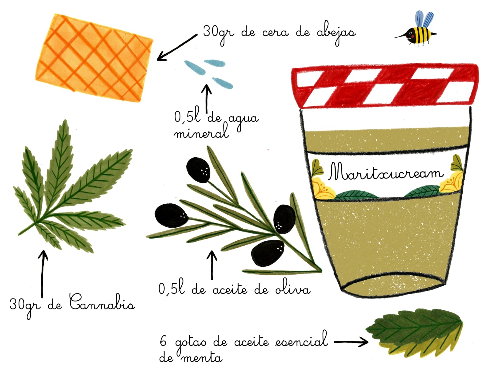

GALERÍA
En la Mutilhuerta plantamos una gran variedad de hortalizas y frutas,
entre ellas: Lechugas, acelgas, borraja, berenjena, pochas, puerros,
cebollas, tomate cherry, tomate feo de tudela, pimiento italiano,
piparras, calabaza, calabacines y cannavis. A finales del mes de junio empezaremos con La Mutilhuerta 2.0. ¡¡No os la perdáis!!
ELABORACIONES
LAMUTILHUERTA
En el siguiente video explicamos como embotar tu propio tomate frito
casero.
Y ahora... el producto estrella de la Mutilhuerta: MaritzuCream!
Explicamos paso a paso como elaborar crema de marihuana. Maritzucream
tiene propiedades medicinales, analgésicas y antiinflamatorias. Es
ideal para combatir los dolores de huesos y traumatismos, además de
artitris, artrosis, dermatitis y acné.
Os dejamos la receta ilustrada para que, ¡la guardéis o peguéis en
la nevera! Ánimo:)
Descargar receta

Y no cabe duda de que a todxs nos encanta el chocolate. ¿Pero cuantas veces te has preguntado como se elabora?
En Ecuador Eider vive rodeada de muchas plantas exóticas que no podemos encontrar aquí. A escasos metros de su casa tienen plantas de cacao, y con este video nos ha enseñado como lo cultivan para hacer chocolate artesanal. !No te lo pierdas!
¡Del árbol directamente a la boca!

.jpg)
.jpg)
.jpg)

.jpg)


{kind=link}